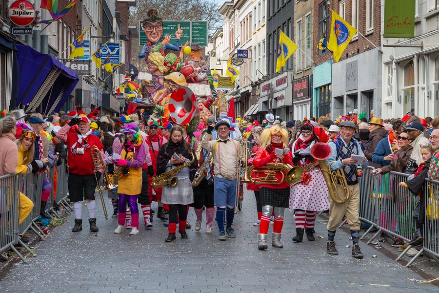
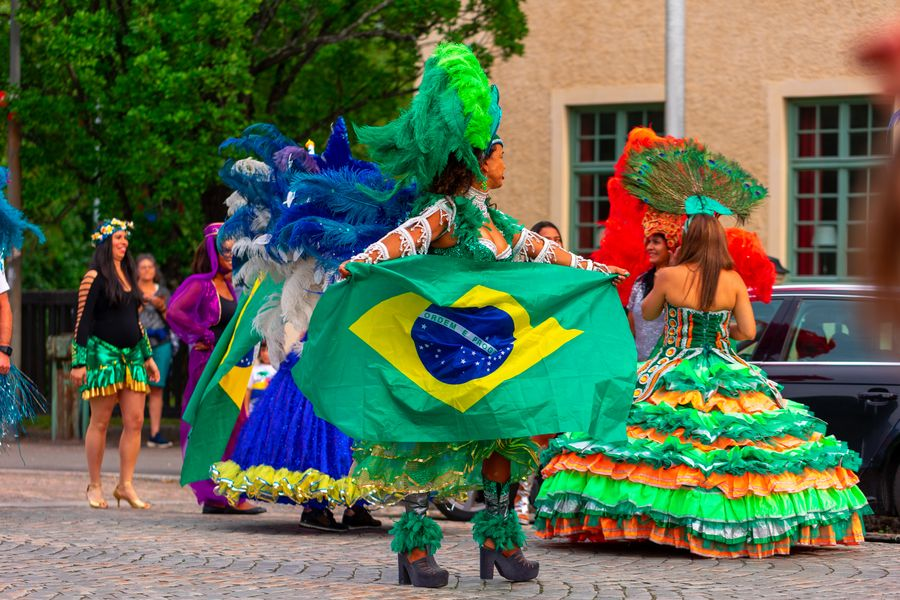
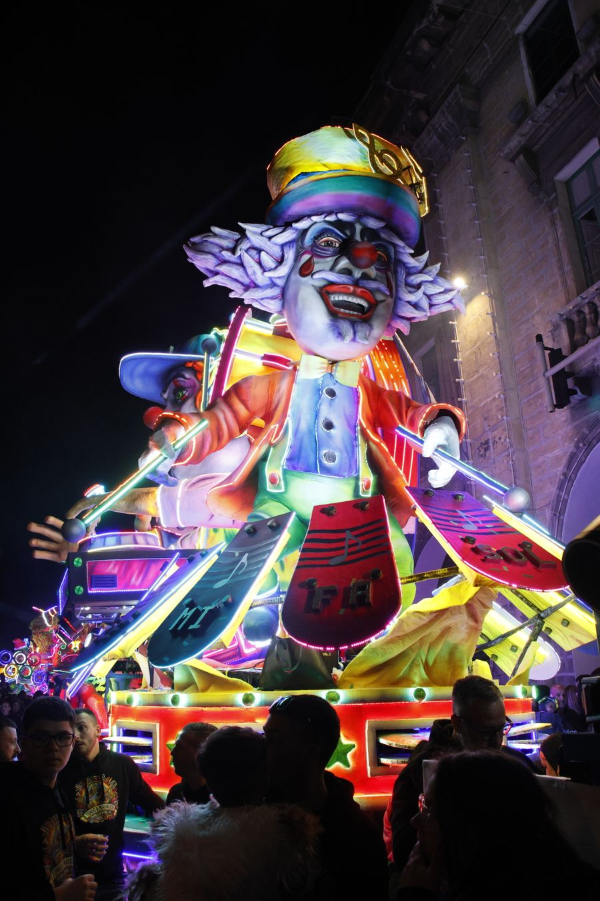

A parade is a river with a running order. I design how it flows — which block follows which, how many metres of air sit between them, and how fast the whole thing is allowed to move.
Aitana Ruiz · parade choreographer · Ruiz Movimiento, Cádiz. Movement design for carnival associations, city festivals and cultural parades — the choreography of the street itself, not of any single group in it.



What I am hired to do
Services register · role stated on every lineA parade belongs to its association and its city. I am hired for the movement — and the register says exactly which part was mine, because the rest belongs to the groups, their captains and their builders.
Full parade movement design
Carnaval de Cádiz 2026 — running order, spacing, pace for 11 blocks. My role: movement design only; floats by the Peña Los Faroles build team. Delivered · Feb 2026Block choreography
Feria de Abril, Seville 2025 — choreography for 3 of 14 blocks. The other 11 groups marched to their own captains' work, credited to them. Delivered · Apr 2025Marshal briefing & route safety
Hogueras de San Juan, Alicante 2025 — running order as a safety document, crossing gaps held, 40 marshals briefed in two sessions. Delivered · Jun 2025Night parade movement design
Cabalgata de Reyes, Valencia 2026 — spacing and pace rewritten for darkness; lit marshal wands; blocks capped at 120 m. Delivered · Jan 2026The route timing planner
Route sheet · Ruta de la AlamedaEvery number below is printed on this page first — the tool reads the same tables the marshals get. Build a running order and it will tell you, in minutes, whether the parade fits inside the road closure it was promised to.
Printed block list — tap to build the order
Your running order
Printed gap rule
Printed pace, by parade class
The arithmetic, line by line
Blocks, end to end0 m
Gaps between blocks0 m
Parade length0 m
Pass time at the cathedral steps0 min
Full route, first step to last clear0 min
Build the running order: tap blocks from the printed list.
Below 8 m the crossings close and marshals lose their ambulance lanes — that is why the minimum is printed, and why no design of mine goes under it.
What the movement costs
Fee shape · published, not quoted in the darkWhat moves the price: block count and route length first — every extra block is another group to audit, time and space. Rehearsal days and marshal sessions follow. The estimator below reads these printed rates; it is a planning figure, not a contract.
| Movement design, per parade — running order, spacing, pace; up to 6 blocks | €2,400 |
|---|---|
| Each additional block designed — beyond the six in the base fee | €180 |
| Directed rehearsal day — the whole order, walked at parade pace | €450 |
| Marshal briefing session — up to 24 marshals, route sheet in hand | €300 |
| Night parade supplement — spacing re-audit after dark, lit marshal kit | €600 |
Movement design (base, up to 6 blocks)€2,400
Additional blocks—
Rehearsal days—
Marshal briefings—
Night supplement—
Deposit 40% on signing; the balance on delivery of the signed running order. Travel beyond Cádiz province is billed at cost and printed on the same sheet.
“Eleven blocks, two crossings, one river. Nothing bunched, nothing rushed — the tail cleared with twelve minutes of closure to spare.”
Carmen Ortiz — chair, Asociación de Comparsas de Cádiz · on the Carnaval de Cádiz 2026 running order (case file 1, Parades page)